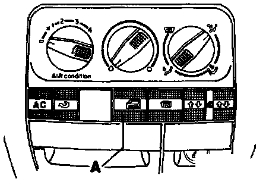

Power Door Lock Switch: Description and Operation

The door latch switch -E150- (-A-) allows all door latches to be locked or unlocked from inside the vehicle.
Pressing the lower part of the switch locks all the doors, and pressing the upper part unlocks them.
NOTE:
- With the door lock switch on the instrument panel, the selective central locking function operates as before (see Owner's Manual).
- If the driver's door is open when depressing the latch knob or pressing the lower part of the lock/unlock switch, that door will not be locked.